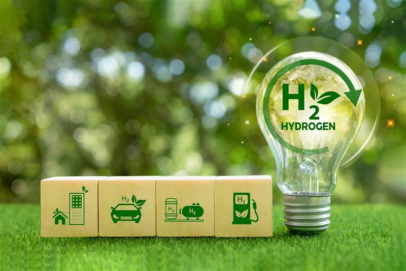
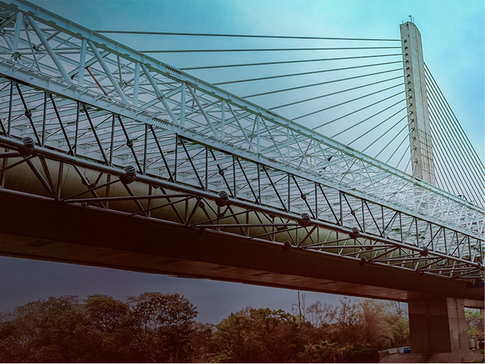
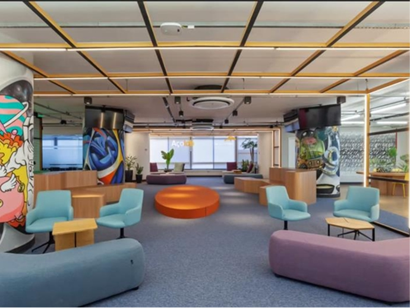

Descarbonização e a Jornada do Aço Verde
A ArcelorMittal lidera a transição para uma siderurgia de baixo carbono com a meta global de alcançar a neutralidade de emissões até 2050. Por meio do programa pioneiro XCarb®, a empresa desenvolve tecnologias e processos que reduzem drasticamente as emissões de CO² na fabricação de aço. Essas inovações aceleram a oferta de soluções industriais limpas para o mercado global.

XCarb®
O programa global XCarb® investe até US$ 100 milhões anuais em startups para alcançar emissões neutras até 2050. No Brasil, a iniciativa oferece certificados verdes e produtos sustentáveis para a construção civil, indústria automotiva e setor industrial (como vergalhão, barras e perfis). Produzido com sucata e energia renovável, esse aço reciclado reduz em até 70% as emissões de CO₂, acelerando a transição ecológica.

Açolab
O Açolab, pioneiro hub de inovação aberta da ArcelorMittal no Brasil, impulsiona a cocriação na indústria do aço. Com mais de 23 mil conexões globais, une startups, universidades e centros de pesquisa a novas possibilidades. A iniciativa soma 1.250 projetos com soluções aplicadas em crédito, manufatura, eficiência e sustentabilidade. O ecossistema é fortalecido pelo Açolab Ventures, fundo focado no investimento e fomento de startups.
